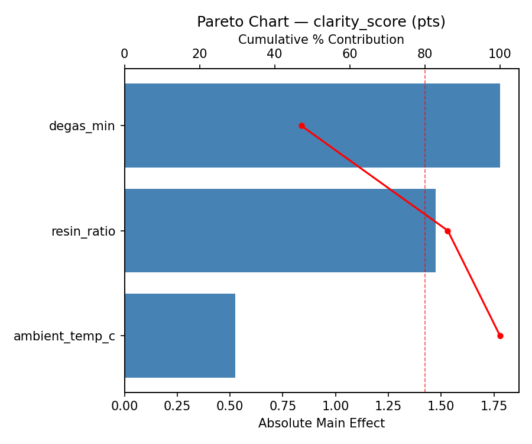
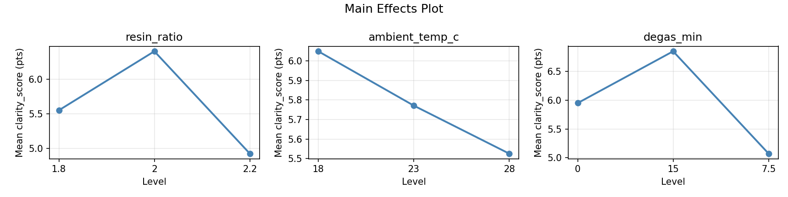
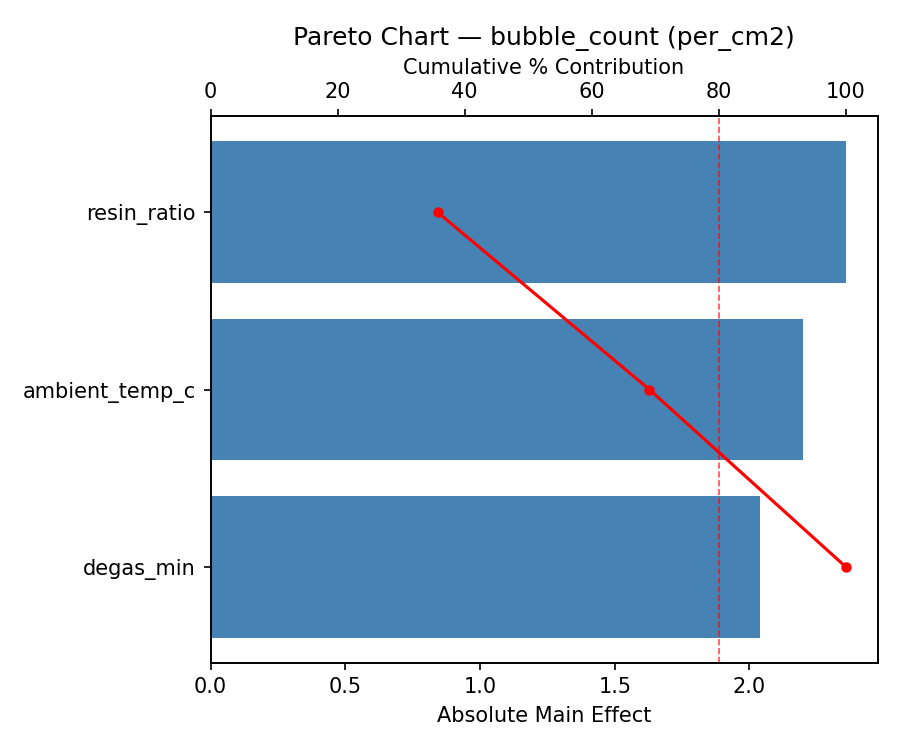
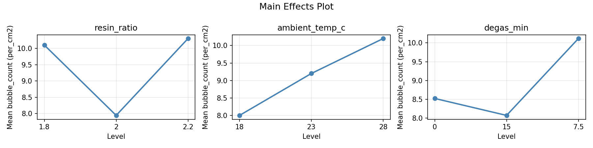
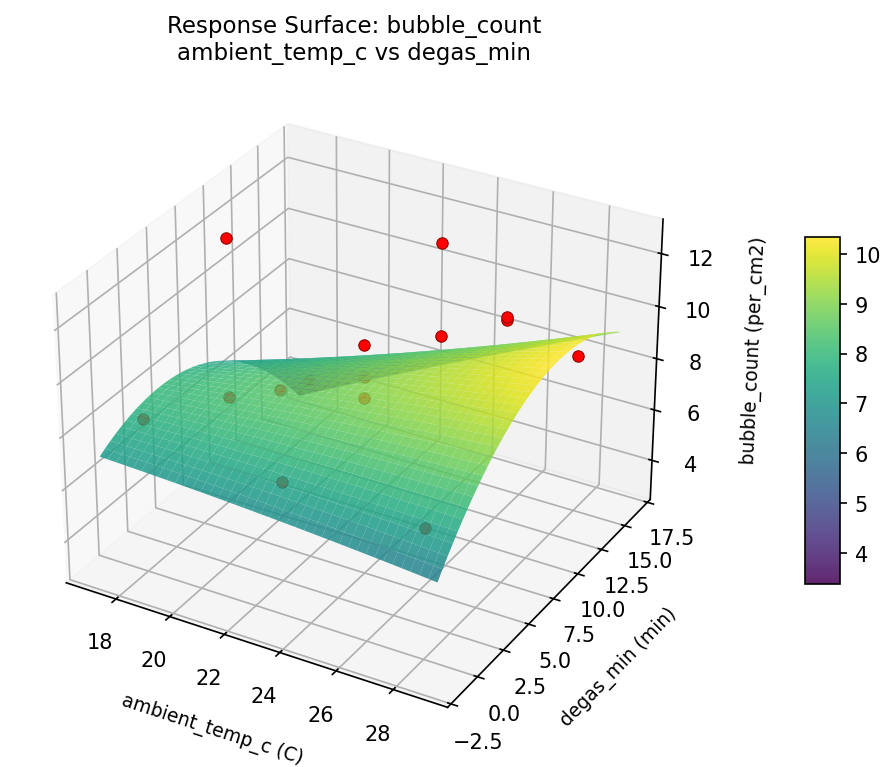
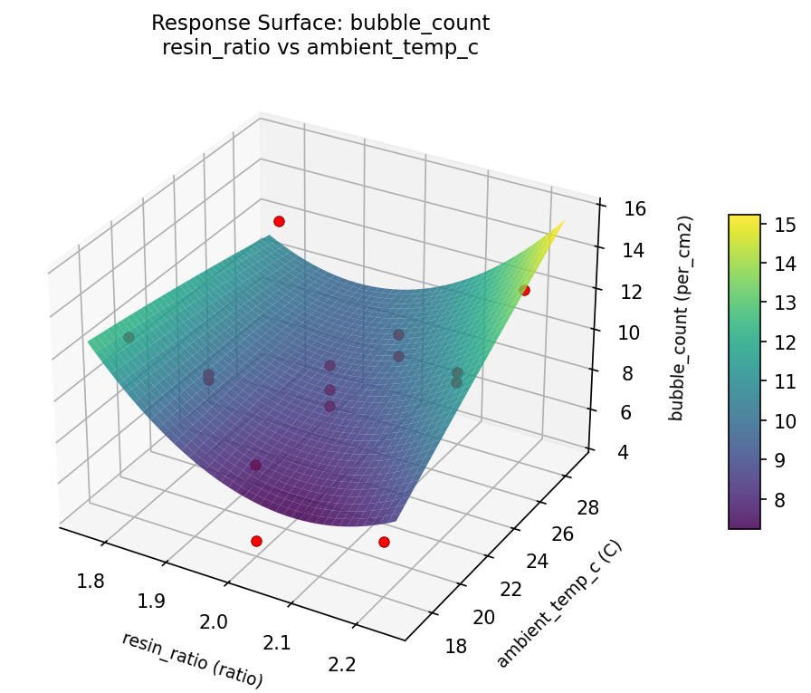
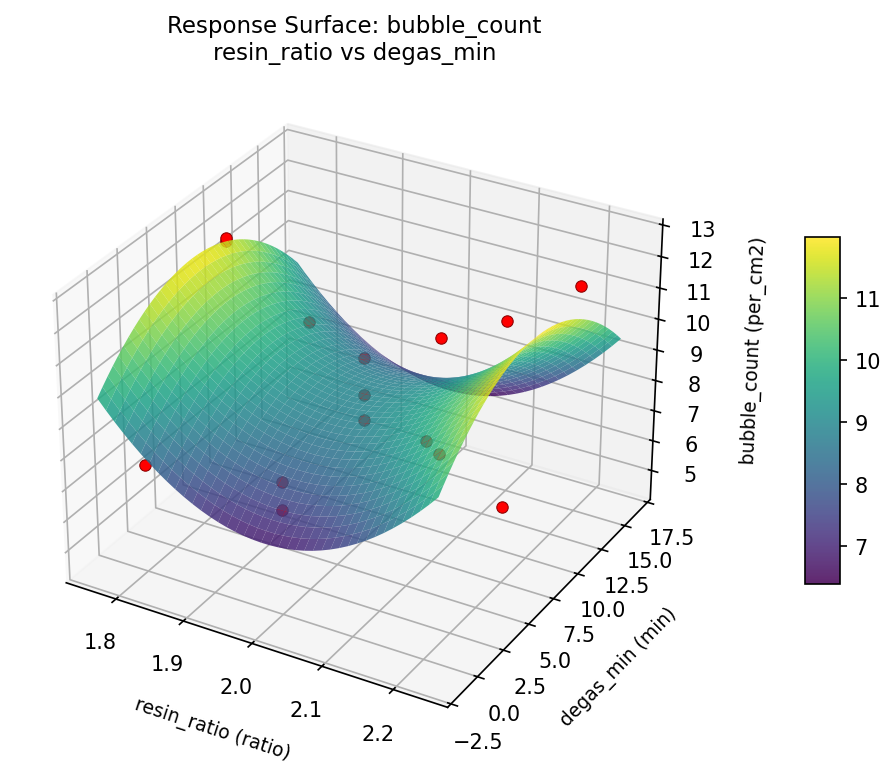
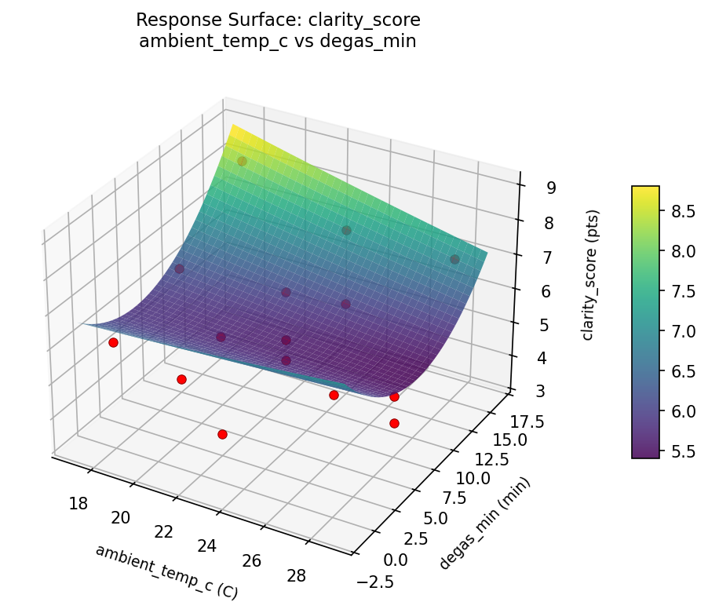
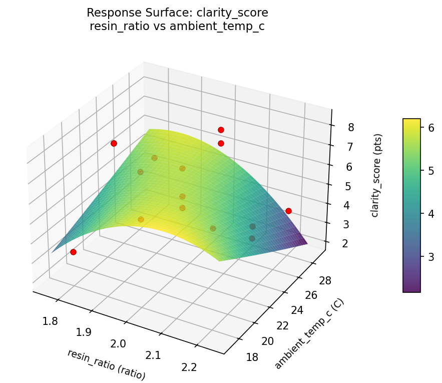
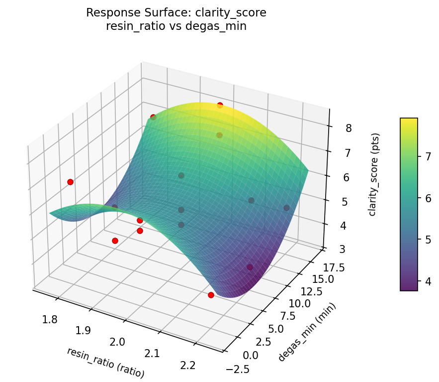

Summary
This experiment investigates epoxy resin art curing. Box-Behnken design to maximize surface clarity and minimize bubbles by tuning resin-hardener ratio, ambient temperature, and degassing time.
The design varies 3 factors: resin ratio (ratio), ranging from 1.8 to 2.2, ambient temp c (C), ranging from 18 to 28, and degas min (min), ranging from 0 to 15. The goal is to optimize 2 responses: clarity score (pts) (maximize) and bubble count (per_cm2) (minimize). Fixed conditions held constant across all runs include resin type = table_top, mold = silicone.
A Box-Behnken design was chosen because it efficiently fits quadratic models with 3 continuous factors while avoiding extreme corner combinations — requiring only 15 runs instead of the 8 needed for a full factorial at two levels.
Quadratic response surface models were fitted to capture potential curvature and factor interactions. The RSM contour plots below visualize how pairs of factors jointly affect each response.
Key Findings
For clarity score, the most influential factors were degas min (47.1%), resin ratio (39.0%), ambient temp c (13.9%). The best observed value was 8.3 (at resin ratio = 2, ambient temp c = 28, degas min = 0).
For bubble count, the most influential factors were resin ratio (35.7%), ambient temp c (33.4%), degas min (30.9%). The best observed value was 4.6 (at resin ratio = 2, ambient temp c = 28, degas min = 0).
Recommended Next Steps
- Run confirmation experiments at the predicted optimal settings to validate the model.
- Consider whether any fixed factors should be varied in a future study.
Experimental Setup
Factors
| Factor | Low | High | Unit |
|---|
resin_ratio | 1.8 | 2.2 | ratio |
ambient_temp_c | 18 | 28 | C |
degas_min | 0 | 15 | min |
Fixed: resin_type = table_top, mold = silicone
Responses
| Response | Direction | Unit |
|---|
clarity_score | ↑ maximize | pts |
bubble_count | ↓ minimize | per_cm2 |
Configuration
{
"metadata": {
"name": "Epoxy Resin Art Curing",
"description": "Box-Behnken design to maximize surface clarity and minimize bubbles by tuning resin-hardener ratio, ambient temperature, and degassing time"
},
"factors": [
{
"name": "resin_ratio",
"levels": [
"1.8",
"2.2"
],
"type": "continuous",
"unit": "ratio"
},
{
"name": "ambient_temp_c",
"levels": [
"18",
"28"
],
"type": "continuous",
"unit": "C"
},
{
"name": "degas_min",
"levels": [
"0",
"15"
],
"type": "continuous",
"unit": "min"
}
],
"fixed_factors": {
"resin_type": "table_top",
"mold": "silicone"
},
"responses": [
{
"name": "clarity_score",
"optimize": "maximize",
"unit": "pts"
},
{
"name": "bubble_count",
"optimize": "minimize",
"unit": "per_cm2"
}
],
"settings": {
"operation": "box_behnken",
"test_script": "use_cases/143_epoxy_resin_art/sim.sh"
}
}
Experimental Matrix
The Box-Behnken Design produces 15 runs. Each row is one experiment with specific factor settings.
| Run | resin_ratio | ambient_temp_c | degas_min |
|---|
| 1 | 2 | 18 | 0 |
| 2 | 2 | 23 | 7.5 |
| 3 | 2.2 | 23 | 15 |
| 4 | 2.2 | 23 | 0 |
| 5 | 2 | 23 | 7.5 |
| 6 | 2 | 23 | 7.5 |
| 7 | 1.8 | 23 | 15 |
| 8 | 2.2 | 18 | 7.5 |
| 9 | 2 | 18 | 15 |
| 10 | 2.2 | 28 | 7.5 |
| 11 | 1.8 | 23 | 0 |
| 12 | 2 | 28 | 15 |
| 13 | 1.8 | 18 | 7.5 |
| 14 | 1.8 | 28 | 7.5 |
| 15 | 2 | 28 | 0 |
Step-by-Step Workflow
1
Preview the design
$ python doe.py info --config use_cases/143_epoxy_resin_art/config.json
2
Generate the runner script
$ python doe.py generate --config use_cases/143_epoxy_resin_art/config.json \
--output use_cases/143_epoxy_resin_art/results/run.sh --seed 42
3
Execute the experiments
$ bash use_cases/143_epoxy_resin_art/results/run.sh
4
Analyze results
$ python doe.py analyze --config use_cases/143_epoxy_resin_art/config.json
5
Get optimization recommendations
$ python doe.py optimize --config use_cases/143_epoxy_resin_art/config.json
ℹ
Multi-Objective Optimization
This experiment has conflicting objectives (clarity_score (↑), bubble_count (↓)). Use --multi to find the best compromise using desirability functions:
$ python doe.py optimize --config use_cases/143_epoxy_resin_art/config.json --multi
6
Generate the HTML report
$ python doe.py report --config use_cases/143_epoxy_resin_art/config.json \
--output use_cases/143_epoxy_resin_art/results/report.html
Real-World Experiment Workflow
ℹ
Physical Product Test? Use the Manual Workflow
These experiments involve real chemical reactions, material properties, and physical processes that require hands-on testing. The simulation script above is for demonstration. For your real experiments, use record, status, and export-worksheet.
$ python doe.py export-worksheet --config use_cases/143_epoxy_resin_art/config.json \
--format csv --output worksheet.csv
$ python doe.py status --config use_cases/143_epoxy_resin_art/config.json
$ python doe.py record --config use_cases/143_epoxy_resin_art/config.json --run 1
$ python doe.py analyze --config use_cases/143_epoxy_resin_art/config.json --partial
$ python doe.py analyze --config use_cases/143_epoxy_resin_art/config.json
$ python doe.py optimize --config use_cases/143_epoxy_resin_art/config.json
$ python doe.py report --config use_cases/143_epoxy_resin_art/config.json \
--output report.html
✔
Works Without a Test Script
The analysis pipeline doesn't care how results were produced. Record your measurements with record, and the full analysis, optimization, and reporting pipeline works identically. Use --partial to get early insights before all runs are complete.
Features Exercised
| Feature | Value |
|---|
| Design type | box_behnken |
| Factor types | continuous (all 3) |
| Arg style | double-dash |
| Responses | 2 (clarity_score ↑, bubble_count ↓) |
| Total runs | 15 |
Analysis Results
Generated from actual experiment runs using the DOE Helper Tool.
Response: clarity_score
Top factors: degas_min (47.1%), resin_ratio (39.0%), ambient_temp_c (13.9%).
Pareto Chart

Main Effects Plot

Response: bubble_count
Top factors: resin_ratio (35.7%), ambient_temp_c (33.4%), degas_min (30.9%).
Pareto Chart

Main Effects Plot

Response Surface Plots
3D surfaces fitted with quadratic RSM. Red dots are observed data points.
bubble count ambient temp c vs degas min

bubble count resin ratio vs ambient temp c

bubble count resin ratio vs degas min

clarity score ambient temp c vs degas min

clarity score resin ratio vs ambient temp c

clarity score resin ratio vs degas min

Full Analysis Output
RSM surface: rsm_clarity_score_resin_ratio_vs_ambient_temp_c.png
RSM surface: rsm_clarity_score_resin_ratio_vs_degas_min.png
RSM surface: rsm_clarity_score_ambient_temp_c_vs_degas_min.png
RSM surface: rsm_bubble_count_resin_ratio_vs_ambient_temp_c.png
RSM surface: rsm_bubble_count_resin_ratio_vs_degas_min.png
RSM surface: rsm_bubble_count_ambient_temp_c_vs_degas_min.png
=== Main Effects: clarity_score ===
Factor Effect Std Error % Contribution
--------------------------------------------------------------
degas_min 1.7786 0.3693 47.1%
resin_ratio 1.4750 0.3693 39.0%
ambient_temp_c 0.5250 0.3693 13.9%
=== Summary Statistics: clarity_score ===
resin_ratio:
Level N Mean Std Min Max
------------------------------------------------------------
1.8 4 5.5500 1.8788 3.3000 7.1000
2 7 6.4000 1.1533 4.8000 8.3000
2.2 4 4.9250 1.1899 3.9000 6.6000
ambient_temp_c:
Level N Mean Std Min Max
------------------------------------------------------------
18 4 6.0500 2.0761 3.3000 8.3000
23 7 5.7714 1.1968 4.3000 7.1000
28 4 5.5250 1.4796 3.9000 7.1000
degas_min:
Level N Mean Std Min Max
------------------------------------------------------------
0 4 5.9500 1.1902 4.3000 7.1000
15 4 6.8500 1.4177 4.9000 8.3000
7.5 7 5.0714 1.3009 3.3000 6.8000
=== Main Effects: bubble_count ===
Factor Effect Std Error % Contribution
--------------------------------------------------------------
resin_ratio 2.3571 0.6190 35.7%
ambient_temp_c 2.2000 0.6190 33.4%
degas_min 2.0393 0.6190 30.9%
=== Summary Statistics: bubble_count ===
resin_ratio:
Level N Mean Std Min Max
------------------------------------------------------------
1.8 4 10.1000 2.8320 7.5000 12.6000
2 7 7.9429 1.6772 4.6000 10.0000
2.2 4 10.3000 2.6090 6.5000 12.4000
ambient_temp_c:
Level N Mean Std Min Max
------------------------------------------------------------
18 4 8.0000 3.4186 4.6000 12.6000
23 7 9.2000 1.5716 7.5000 11.4000
28 4 10.2000 2.6369 7.4000 12.5000
degas_min:
Level N Mean Std Min Max
------------------------------------------------------------
0 4 8.5250 1.6338 7.4000 10.9000
15 4 8.0750 2.7921 4.6000 11.4000
7.5 7 10.1143 2.4620 6.5000 12.6000
Pareto chart (clarity_score): use_cases/143_epoxy_resin_art/results/analysis/pareto_clarity_score.png
Pareto chart (bubble_count): use_cases/143_epoxy_resin_art/results/analysis/pareto_bubble_count.png
Main effects (clarity_score): use_cases/143_epoxy_resin_art/results/analysis/main_effects_clarity_score.png
Main effects (bubble_count): use_cases/143_epoxy_resin_art/results/analysis/main_effects_bubble_count.png
Optimization Recommendations
=== Optimization: clarity_score ===
Direction: maximize
Best observed run: #12
resin_ratio = 2
ambient_temp_c = 28
degas_min = 0
Value: 8.3
RSM Model (linear, R² = 0.3214, Adj R² = 0.1363):
Coefficients:
intercept +5.7800
resin_ratio +0.9750
ambient_temp_c +0.2000
degas_min -0.4000
RSM Model (quadratic, R² = 0.8146, Adj R² = 0.4808):
Coefficients:
intercept +5.7667
resin_ratio +0.9750
ambient_temp_c +0.2000
degas_min -0.4000
resin_ratio*ambient_temp_c -1.1500
resin_ratio*degas_min +0.0500
ambient_temp_c*degas_min -0.0000
resin_ratio^2 -1.0583
ambient_temp_c^2 +0.0417
degas_min^2 +1.0417
Curvature analysis:
resin_ratio coef=-1.0583 concave (has a maximum)
degas_min coef=+1.0417 convex (has a minimum)
ambient_temp_c coef=+0.0417 negligible curvature
Notable interactions:
resin_ratio*ambient_temp_c coef=-1.1500 (antagonistic)
Predicted optimum (from quadratic model):
resin_ratio = 2
ambient_temp_c = 28
degas_min = 0
Predicted value: 7.4500
Model quality: Good fit — general trends are captured, some noise remains.
Factor importance:
1. resin_ratio (effect: 2.1, contribution: 52.4%)
2. degas_min (effect: 1.5, contribution: 37.6%)
3. ambient_temp_c (effect: 0.4, contribution: 9.9%)
=== Optimization: bubble_count ===
Direction: minimize
Best observed run: #12
resin_ratio = 2
ambient_temp_c = 28
degas_min = 0
Value: 4.6
RSM Model (linear, R² = 0.1966, Adj R² = -0.0225):
Coefficients:
intercept +9.1467
resin_ratio -1.1625
ambient_temp_c +0.0750
degas_min +0.7875
RSM Model (quadratic, R² = 0.7870, Adj R² = 0.4037):
Coefficients:
intercept +9.0333
resin_ratio -1.1625
ambient_temp_c +0.0750
degas_min +0.7875
resin_ratio*ambient_temp_c +1.0000
resin_ratio*degas_min -0.1750
ambient_temp_c*degas_min +0.1500
resin_ratio^2 +2.3958
ambient_temp_c^2 +0.0708
degas_min^2 -2.2542
Curvature analysis:
resin_ratio coef=+2.3958 convex (has a minimum)
degas_min coef=-2.2542 concave (has a maximum)
ambient_temp_c coef=+0.0708 negligible curvature
Notable interactions:
resin_ratio*ambient_temp_c coef=+1.0000 (synergistic)
Predicted optimum (from quadratic model):
resin_ratio = 1.8
ambient_temp_c = 18
degas_min = 7.5
Predicted value: 13.5875
Model quality: Good fit — general trends are captured, some noise remains.
Factor importance:
1. resin_ratio (effect: 3.7, contribution: 52.4%)
2. degas_min (effect: 3.2, contribution: 45.4%)
3. ambient_temp_c (effect: 0.2, contribution: 2.1%)